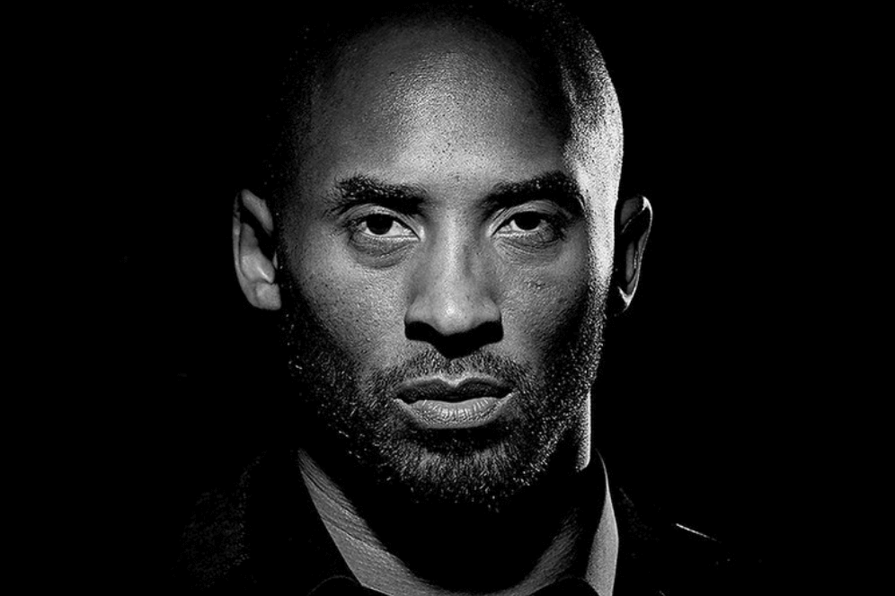

Kobe Bean Bryant was born on August 23, 1978, in Philadelphia, Pennsylvania. Named after a city in Japan, Bryant is the son of former NBA player Joe "Jellybean" Bryant. In 1984, after ending his NBA career, the elder Bryant took the family to Italy, where he played in the Italian League. Growing up in Italy alongside two athletic older sisters, Shaya and Sharia, Bryant was an avid player of both basketball and soccer. When the family returned to Philadelphia in 1991, Bryant joined the Lower Merion High School basketball team, leading it to the state championships four years in a row. With an eye on the NBA, he also started working out with the... Click here to view more...